Sparks of Weight-Space Programming
가중치만 보고
게임을 맞힐 수 있을까?
벽돌깨기 게임을 배운 신경망에는 패들이 다닌 자리가 한 줄로 남았다. 이 흔적을 읽는 일에서 출발해, 답을 끝내지 못하는 언어 모델의 가중치를 고치는 일까지 따라가 본다.
‘읽었다’와 ‘고쳤다’에는 서로 다른 증거가 필요하다
가중치 공간 프로그래밍은 신경망에 저장된 숫자를 조사하고, 원하는 동작에 맞게 그 값을 직접 쓰는 방법이다. 영상은 MIT CSAIL의 연구 블로그에 소개된 GPT-6 Astra 실험을 해설하고, 게스트가 같은 접근을 지식 주입과 화풍 편집에 적용한 결과를 덧붙인다. 편집 과정의 공통 조건은 역전파 없이 값을 바꾼다는 것. 편집자에게 허용한 단서와 실행 횟수는 실험마다 달랐다.
7/7 작은 모델의 과제 판독
입출력의 의미를 알려 준 게임 네 종류와 출력층 패턴을 제시한 도형 세 종류를 모두 식별. 원의 내부가 채워지는 세부 동작은 놓쳤다.
+40.2%p Qwen의 수학 점수
모델 실행을 50회 허용한 조건에서 MATH-500 점수가 7.9%에서 48.1%로 상승. 답안을 끝내지 못하는 비율도 함께 줄었다.
40% 바꿔 물었을 때의 정답률
게스트의 삼국지 퀴즈 원문에서는 편집 후 최고 100%를 기록. 표현을 바꾼 문항에서는 4%에서 40%로 올랐다.
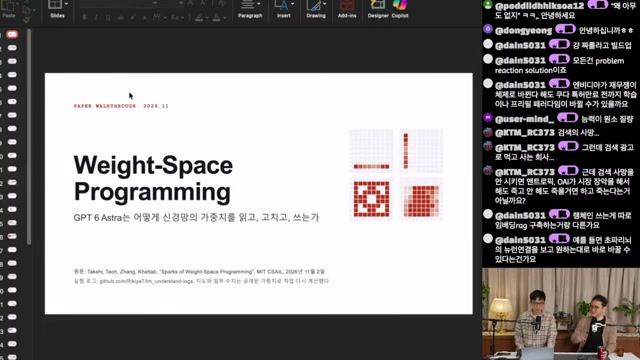
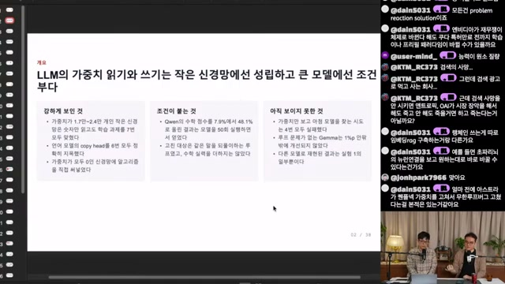
패들이 지나간 자리가 한 줄로 남았다
10×10 게임판에서 내 캐릭터, 움직이는 물체, 보상 대상, 장애물, 직전 화면을 다섯 채널로 기록하면 입력은 500개의 숫자가 된다. 네 게임의 정책망은 모두 같은 구조로 PPO 10억 스텝을 학습했다. Astra에게 주어진 것은 각 채널과 행동의 의미, 그리고 학습을 마친 가중치였다. 게임 화면과 후보 목록은 주어지지 않았다.
정책망의 구조는 500 → 32 → 32 → 5이며 은닉층의 활성화 함수는 tanh다. 편향을 포함한 층별 매개변수는 16,032개, 1,056개, 165개로 합계 17,253개. 프롬프트에는 채널별로 큰 값이 어디에 몰렸는지, 출력층은 어느 행동을 구분하는지 근거 숫자를 적으라는 단서가 있었다.
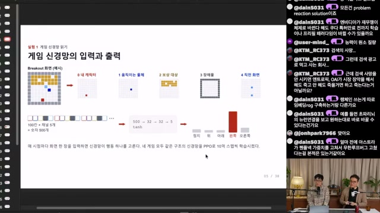
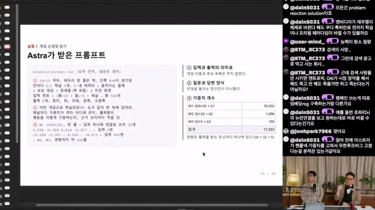
왜 가중치에 위치가 남을까?
∂L/∂W₁[i,j] = xᵢ × δⱼxᵢ는 입력 칸의 값, δⱼ는 은닉 유닛 j로 전달된 오차 신호.물체가 한 번도 나타나지 않은 칸은 입력값이 늘 0이어서 위 식의 기울기도 0이다. 이 망에서 첫 층 가중치 절댓값의 중앙값은 0.067이었고, 행동 선택에 관여한 일부 연결은 절댓값이 1~6까지 커졌다. 입력별 가중치 크기를 게임판 위에 다시 놓으면 물체가 어느 범위에서 움직였는지 추론할 수 있다.
Breakout에서는 내 캐릭터 채널의 8행, 공 채널의 1~7행, 보상 채널의 1~3행이 두드러졌다. 입력 405번에 연결된 두 유닛의 값은 각각 4.066과 −4.013. 바닥의 패들, 그 위를 오가는 공, 맨 위의 벽돌이라는 해석은 출력층에서도 맞아떨어졌다. 크게 구분되는 행동은 왼쪽과 오른쪽이었다.
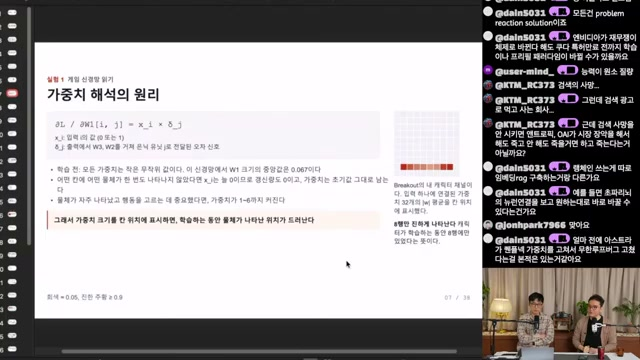
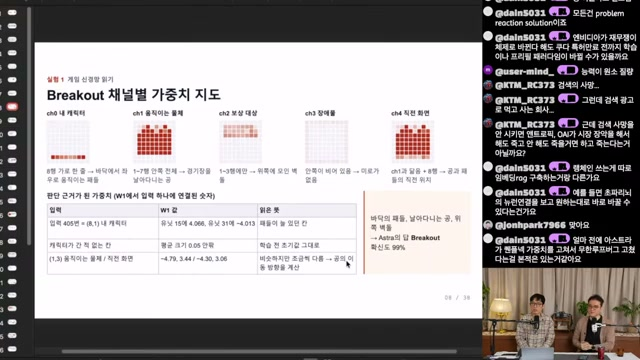
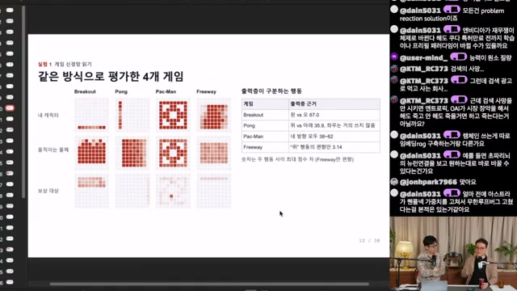
도형은 맞혔다. 원의 속은 비어 있었을까?
약 2.3만 개 가중치를 가진 소형 디퓨전 모델 세 개에서도 출력층에 남은 곡선과 직선 조각으로 원·사각형·삼각형을 구별했다. Astra가 보고한 확신도는 각각 84%, 77%, 88%였다. 그런데 직접 그린 예시에서 원의 가운데를 비워 두었다.
출력 패턴을 하나씩 보면 폭 1~2칸짜리 띠처럼 보인다. 실제 생성에서는 은닉 유닛 28개의 출력이 겹쳐 원의 안쪽까지 채워졌다. 부분을 정확히 읽고도 여러 부분이 동시에 작동한 결과는 놓칠 수 있음을 보여 주는 사례다.
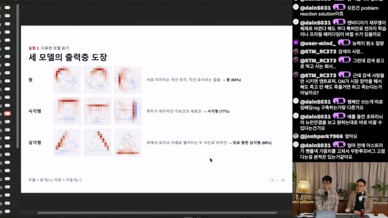
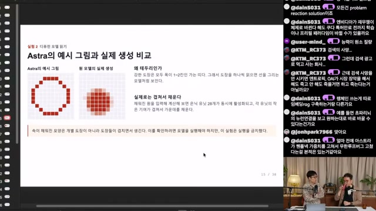
글자 이름을 가려도 복사 회로는 찾을 수 있을까?
Python 코드, 로마자로 쓴 일본 문학, 영어 위키백과를 각각 학습한 모델에서 임베딩과 출력층을 제거했다. 어느 벡터가 어느 글자인지 연결해 주는 표가 사라진 셈이다. 남은 가중치는 708만 개. 네 블록에 여섯 개씩 있는 어텐션 헤드를 조사할 때는 Python으로 행렬곱·특잇값 분해(SVD)·고유값 계산을 수행할 수 있었다. 샌드박스와 6~11회 결과를 주고받았으며, 입력을 넣어 모델을 실행하는 것은 금지됐다.
조사 대상은 앞 토큰의 정보를 옮기는 헤드와 그 정보를 복사에 활용하는 헤드의 연결이었다. 먼저 쿼리·키(QK) 행렬의 위치 반응과 RoPE 회전 패턴을 살폈다. 이어 두 헤드의 행렬을 조합하고, 현재 글자와 앞에서 전달된 글자가 일치하는 대각선에 얼마나 점수가 모이는지 비교했다.
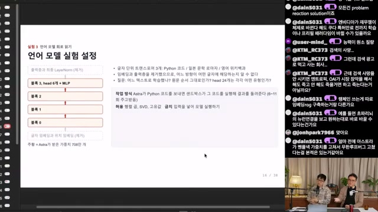
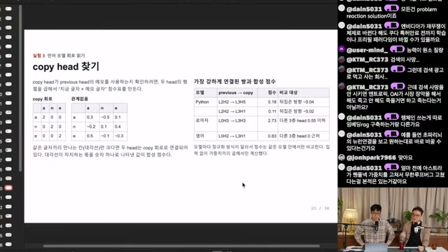
영상은 copy head 지목 결과를 6전 6회 성공으로 요약한다. 학습 텍스트를 판별할 때는 정보가 집중된 방향의 수도 단서였다. 글자 종류가 적은 로마자 모델에서는 상위 24개 방향에 집중되는 양상이 나타났다.
경사로 앞에서 멈춘 차에 후진을 써넣다
Kinetix의 차는 경사로를 향해 곧장 달리다가 멈췄다. PPO가 학습한 정책은 가속 거리를 확보하려고 먼저 뒤로 물러나는 행동을 찾지 못했다. Astra에게 정책 가중치 171,664개와 장면 설명, 실패 장면 녹화 한 편을 제공했다.
한 번의 응답으로 만든 51줄 편집은 차 위치·차 속도·바퀴 위치에서 출발한다. 여섯 개의 문턱 조건을 조합해 후진과 왼쪽 전속력 플래그를 켰다. 차가 오른쪽 끝(x = 3.8 부근)에 이르면 왼쪽으로 질주하고, 경사로를 넘은 뒤에는 원래 정책이 다시 운전한다. 바뀐 값은 6,073개, 전체의 약 3.5%. 성공률은 0%에서 평가 1,024회 중 1,024회 성공으로 올랐다.
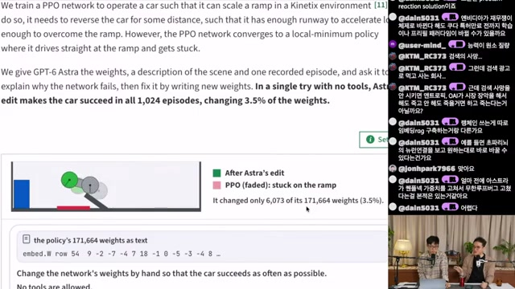
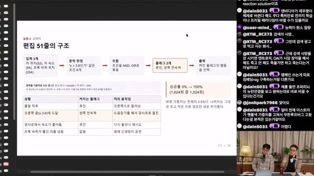
빈 신경망에서 시작하면 게임 규칙이 성적을 가른다
다음 실험에서는 가중치가 모두 0인 600 → 32 → 32 → 6 신경망을 건넸다. Astra는 게임 규칙과 소스 코드만 읽고 한 번의 응답으로 정책을 작성했다. 게임을 미리 실행해 볼 기회는 없었다.
| 게임 | PPO 1억 스텝 | PPO 5억 스텝 | Astra |
|---|---|---|---|
| Breakout | 15.8 | 25.3 | 517.4 |
| Seaquest | 5.6 | 88.9 | 53.1 |
| Asterix | 25.8 | 55.2 | 53.2 |
Breakout은 공이 떨어질 열을 계산해 패들을 미리 옮기는 규칙이 통했다. Seaquest와 Asterix에서는 한 열에 머물며 위험을 피하는 전략에 그쳐 PPO 5억 스텝 정책보다 낮은 점수를 받았다.
9×9 바둑은 피드백 조건이 달랐다. 자막에 따르면 첫 설계 이후 패배한 기보를 읽고 가중치를 다듬는 과정을 50회 반복한 끝에 PPO 신경망을 이겼다. 이 결과는 대응 슬라이드 없이 자막으로만 전해진다.
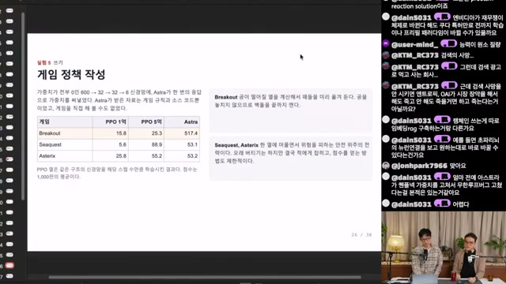
수학 점수의 첫 단서는 끝나지 않은 답안 85개였다
Qwen3.5-0.8B의 연습 답안 96개 중 85개가 32,768토큰 한도에 도달했다. 대부분 같은 구절을 반복하고 있었다. 이 관찰에서 검증할 가설이 나왔다. 반복을 줄여 모델이 답안을 끝낼 수 있게 하면, 이미 풀 수 있었던 문제에서 점수를 회복할 수 있을까?
Astra는 Python 커널로 가중치를 읽고 쓸 수 있었고, GSM8K·MATH 학습셋 문제로 모델을 실행할 수 있었다. 평가 문제는 제공하지 않았다. 경사 계산과 학습, 임베딩·출력층 편집은 금지됐다. 10회·25회·50회는 각각 별도로 시작한 실행 예산이다.
| 실행 예산 | 개입 | MATH-500 | 토큰 한도 도달률 |
|---|---|---|---|
| 편집 전 | 원본 모델 | 7.9% | 93% |
| 10회 | 8~22층 행렬 30개에서 반복 방향 제거 | 12.3% | 87% |
| 25회 | 15층 어텐션 헤드 하나의 출력 제거 | 14.1% | 86% |
| 50회 | 15·19층 MLP의 열 128개 편집 | 48.1% | 33% |
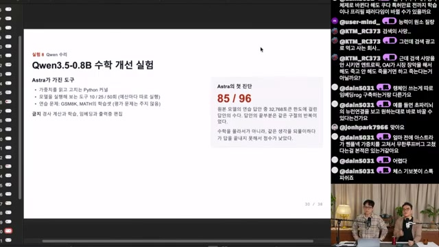
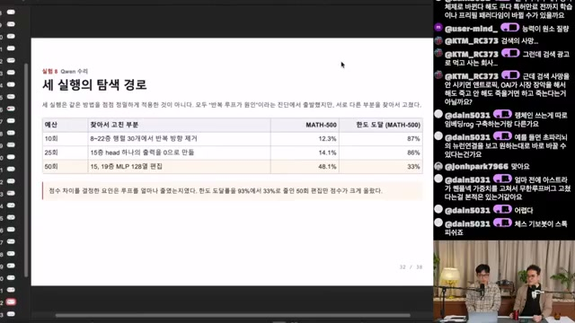
반복이 드문 모델에서는 0.9%p
같은 규칙을 적용한 Gemma 3 270M은 처음부터 한도 도달률이 8.5%였다. 많은 오답은 답을 끝낸 뒤에도 남는 추론 실수였다. 5·10·25·50회 예산에서 평가 점수는 7.0~7.7%. 원본 6.8%에서 최고 0.9%p 상승했다. 두 모델의 차이는 Qwen에서 관측된 개선을 반복 결함의 완화로 해석할 근거가 된다.
“모델 안에 있는 것은 뜯어고칠 수 있지만 없는 것을 넣어 주지는 못했다.”
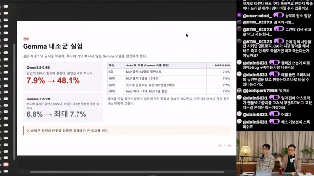
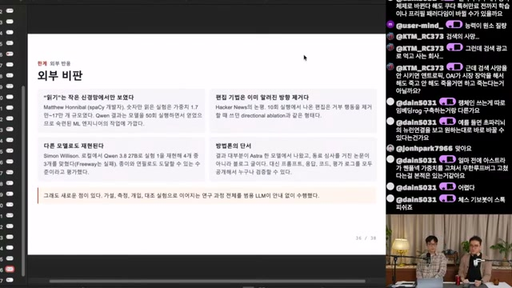
문제를 바꿔 물으면 무엇이 남을까?
게스트는 Qwen3.5-0.8B에 삼국지 지식을 써넣고 직접 만든 200문제로 평가했다. 원문의 정답률은 3%에서 Fable 약 95%, Astra 100%로 상승했다. 표현을 바꾼 문항에서는 4%에서 40%로 올랐다. 새 표현에도 편집 효과가 일부 이어졌지만, 원문에서 보인 성적과는 차이가 컸다.
결과 페이지의 지도에서 Claude Fable 5.2는 19층 MLP 뉴런 614개, GPT-6 Astra는 마지막 23층 뉴런 456개를 재배선했다. 뉴런 하나에는 여러 연결값이 딸려 있다. 자막에서 언급한 변경량 약 491만 개는 값의 개수다.
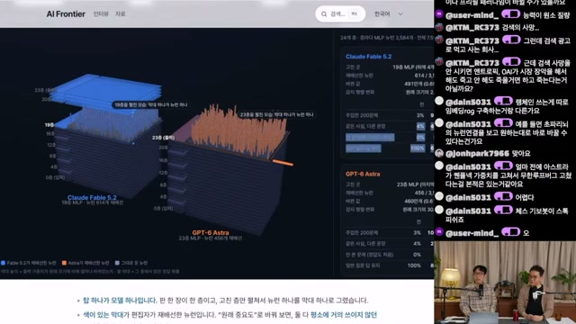
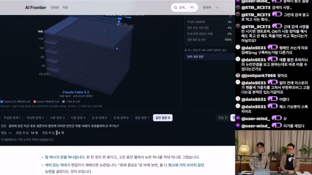
Fable의 일곱 번 시도에서 달라진 것
처음에는 행렬 전체를 바꾸고 보존할 질문을 지정했다. 보호 범위를 넓히면 주입률이 무너졌고, 보호 강도를 낮추면 일반 상식 점수가 떨어졌다. 두 성적을 함께 올린 변화는 덜 쓰이는 뉴런을 질문 감지기로 전환한 다섯 번째 시도였다.
| 시도 | 편집 방법 | 주입 | 일반 상식 |
|---|---|---|---|
| 1차 | 19층 MLP 출력 행렬을 최소제곱으로 덮어쓰기 | 93% | 7.5% |
| 2차 | 일반 질문 107개를 보호 대상으로 지정 | 93.5% | 5% |
| 3차 | 보호 범위를 약 1,600개로 확대 | 6% | 27.5% |
| 4차 | 보호 강도를 100분의 1로 낮춤 | 78% | 15% |
| 5차 | 저활용 뉴런 614개를 기억 소자로 재배선 | 94.5% | 27.5% |
| 6차 | 기억 소자를 네 층에 분산 | 74.5% | 27.5% |
| 7차 | 한 층에 모으고 비운 뉴런의 기존 역할을 나머지 뉴런에 분담 | 94% | 30% |
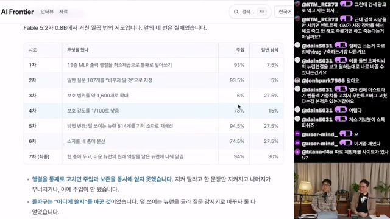
황소 그림 옆에 프롬프트 대조군을 놓은 이유
게스트는 이중섭 작품 여섯 점을 참조해 이미지 모델의 화풍을 편집했다. 편집자는 생성 결과를 계속 보며 다음 층을 골랐다. 같은 주제를 기본 모델, 작가 이름을 넣은 프롬프트, 화풍을 풀어 쓴 프롬프트로도 그렸다. 마지막 대조군 덕분에 그림에서 읽어 낸 정보를 글로 전달하는 것만으로 어디까지 가능한지 비교할 수 있었다.
화면상 모델에는 트랜스포머 블록 50개가 있었고 가중치의 95.8%가 4비트였다. 이 실험에서는 크기 2%의 편집이 재양자화할 때 사라졌고, 20% 편집도 변경분의 40%가 깎였다. 실제 수정은 양자화되지 않은 텍스트 투영·변조층·VAE에 집중됐다.
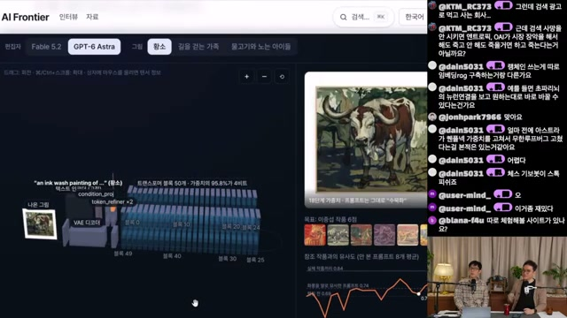
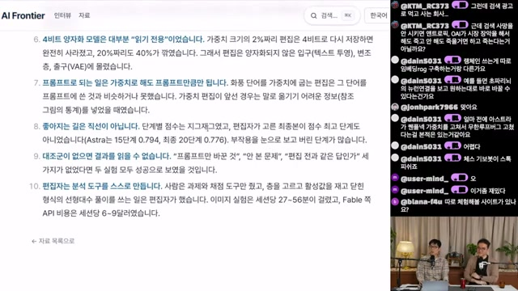
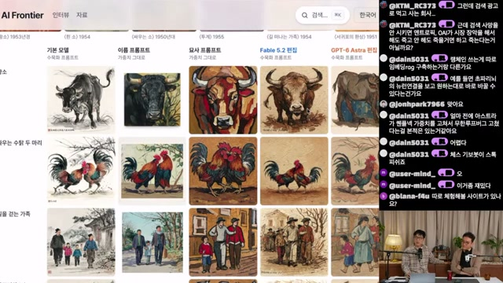
진행자들은 Astra 결과에서 동양화 느낌을, Fable 결과에서 유화 느낌을 더 강하게 받았으며 목표 화풍에는 충분히 이르지 못했다고 평했다. 게스트의 해석으로는 화풍 단어를 가중치에 넣은 편집은 프롬프트와 비슷하거나 뒤처졌고, 말로 옮기기 어려운 참조 그림의 통계를 반영했을 때 이점이 나타났다.
보고된 이미지 실험 시간은 세션당 27~56분, Fable API 비용은 세션당 6~9달러다. 삼국지 실험에서 언급한 월 200달러는 사용한 요금제 금액이다.
편집의 가치는 실패 원인을 얼마나 좁혔는지에서 드러난다
패들이 다니는 행, 후진이 빠진 운전 정책, 같은 말을 되풀이하다 끝나는 답안에는 공통점이 있다. 관측한 흔적을 구체적인 동작과 연결할 수 있다. 이때는 편집 전후의 차이도 검사하기 쉽다. 차가 경사로를 넘었는지, 답안이 토큰 한도 전에 끝났는지 직접 셀 수 있기 때문이다.
영상에서 연구 자동화의 가능성을 본 지점도 여기에 있다. 범용 언어 모델이 가설을 세우고 측정 방법을 정한 뒤 가중치를 바꾸고 결과를 평가했다. 진행자들은 온디바이스 소형 모델의 국소 수정과 지속 학습을 후속 응용 가능성으로 꼽았다. 게스트 실험에서 드러난 일반화와 망각은 그런 응용에 남은 과제다.
독립 재현이 닿은 범위
- 영상이 인용한 Matthew Honnibal의 논평은 숫자를 직접 읽는 작은 망의 실험과 Qwen을 50회 실행한 실험의 조건 차이를 지적한다. 후자는 숙련된 엔지니어의 진단 과정과도 닮았다.
- Hacker News에서 제기된 비판은 10회 예산의 편집이 기존의 방향 제거 기법(directional ablation)과 같은 형태라는 점이다.
- 영상에 따르면 Simon Willison은 로컬 Qwen 27B로 게임 네 개 중 세 개를 식별했고 Freeway를 놓쳤다. 다른 모델로 확인된 범위는 게임 판독의 일부다. 정확한 모델 버전은 화면에서 읽기 어렵다.
다음 가중치 편집 결과를 읽을 때는 세 가지를 함께 보면 좋다. 편집자가 무엇을 볼 수 있었는가? 같은 조건의 대조군은 얼마나 달라졌는가? 질문을 바꾼 뒤에도 개선이 남았는가? 이 질문들이 있어야 7/7, 48.1%, 100%가 각각 무엇을 측정한 숫자인지 보인다.
무엇을 보고 기록했나
연구, 영상, 게스트 실험의 관계
이 글은 sudoremove의 35분 20초 영상에 대한 제공 노트를 재구성했다. 영상은 MIT CSAIL의 Sparks of Weight-Space Programming을 동료 심사 전 연구 블로그로 소개하며 프롬프트·응답·코드·평가 로그를 공개했다고 설명한다. 연구 수치는 진행자가 옮긴 슬라이드를 따랐고 원 블로그 및 로그와의 독립 대조는 이뤄지지 않았다. 삼국지·이미지 편집은 영상 후반 ‘AI Frontier’ 화면에서 소개한 게스트의 별도 실험이다. 전체 영상 보기
자막과 화면의 근거 수준
노트 작성자는 한국어 자동 생성 자막 약 4.6만 자, 영상 메타데이터·설명란·챕터, 원본 영상에서 추출한 프레임 24장을 사용했다. 수동 자막은 없었으며 고유명사는 가능한 경우 화면 철자를 따랐다. 바둑의 반복 개선, 아첨 모델의 어텐션 검사, Qwen의 다른 벤치마크 상승은 해당 비교 화면 없이 자막에 의존한다. 작은 망에서의 ‘계산 금지’ 역시 프롬프트 조건이어서 모델 내부의 계산 과정까지 확인하지는 못했다.
프레임 선정과 판독 한계
노트에 기록된 절차는 ffmpeg 장면 전환 검출(임계값 0.25)로 전환점 246개를 찾고, 안정 구간과 챕터 위치를 이용해 후보 250개를 고르는 것으로 시작했다. 휘도·표준편차·32×18 축소 영상 차분으로 걸러 낸 238장을 육안 검토했다. 이어 2,120초 전 구간을 1초 간격으로 조사해 슬라이드 구간 29개와 페이지 43개를 탐지했다. 로딩·커서 이동 등 중복 변형을 정리하고 32:24 비교 격자를 수동으로 보완해 최종 24장을 수록했다.
1080p·720p 다운로드는 HTTP 403으로 차단됐다. 실제 판독 자료는 Android 플레이어 클라이언트로 확보한 640×360 영상(약 87MB)이다. 제목·큰 숫자·표는 읽을 수 있었으나 작은 출처 줄, 3D 측면 패널, 채팅은 부분 판독만 가능했다. 원 블로그 저자명과 로그 저장소 주소는 확정할 수 없어 기재하지 않았다.